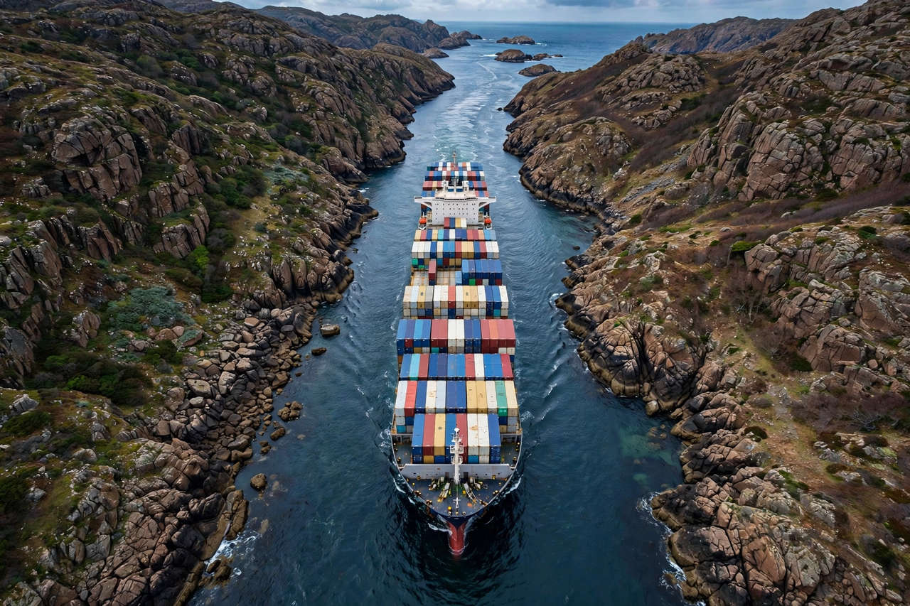

From Wikipedia, the free encyclopedia

In military strategy and geopolitics, a chokepoint is a geographical feature on land or at sea which an armed force is forced to pass through, and which therefore greatly decreases its combat power by forcing it into a narrow front. More broadly, the term describes any narrow channel along a transport route — a strait, canal or mountain pass — through which trade and energy supplies are funnelled, making them vulnerable to blockade, accident or attack.
The world's principal maritime chokepoints include the Strait of Malacca between Malaysia and Indonesia, the Strait of Hormuz at the mouth of the Persian Gulf, the Bab el-Mandeb between the Red Sea and Gulf of Aden, the Suez Canal, the Panama Canal, the Turkish Straits (Bosphorus and Dardanelles), the Strait of Gibraltar and the Danish Straits. Energy analysts track these routes closely: around a fifth of global petroleum liquids consumption passes through Hormuz alone, and large volumes move through Malacca and Bab el-Mandeb.
Control of chokepoints has shaped naval strategy for centuries — Britain's hold on Gibraltar, Aden and Singapore guarded the route to India, with Perim Island watching the Red Sea entrance. Modern disruptions illustrate their leverage: the grounding of the container ship Ever Given blocked the Suez Canal for six days in March 2021, halting an estimated billions of dollars of trade per day, and Houthi attacks from 2023 diverted much Asia–Europe shipping from Bab el-Mandeb around the Cape of Good Hope. States and alliances therefore maintain naval forces and bases near key chokepoints and develop pipelines and alternative routes to bypass them.